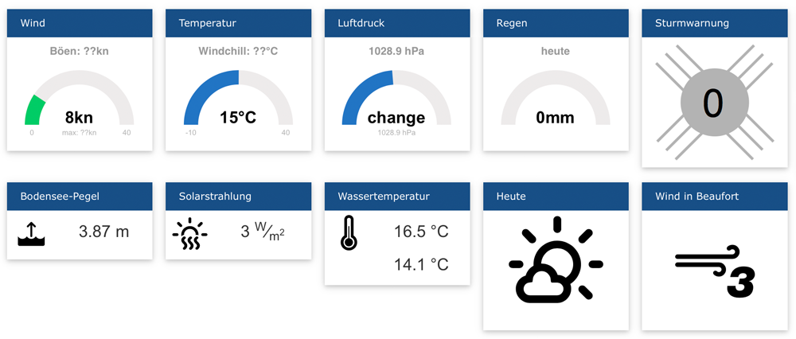

Wochenreport KW 19
Ziel dieser Woche
- Historische Daten erstellen in der DB
- API-Programmierung
- Cronjobs für externe Sensoren
- Installation des Pegel- und Strahlungssensors
- Windvorhersagedaten aufbereiten und anzeigen
Resultat / Erkenntnisse
Historische Daten erstellen in der DB
Die Stundendaten wurden bis zum 31.3 erstellt. Für die Min und Max Werte wurden die stündlichen Min und Max Werte genommen. Für die restlichen Daten der Mittelwert. Der Grund den Mittelwert zu nehmen und nicht den Median ist folgender. Die neu geschriebene Sorftware sollte möglichst einfach verständlich und schnell anpassbar sein. Da es für den Mittelwert einen Befehl in MariaDB 10.1 gibt und für den Median erst ab Version 10.3, ist dies einfach anpassbar wenn Hostpoint die neue Version zur Verfügung stellt. Die restlichen Daten werden in der kommenden Woche geschrieben, da dann die DateMaster Tabelle auch vollständig importiert sein sollte.
API programmierung
Bei der API gab es noch einige Änderungen wie die Namen der verschiedenen JSONs, sowie die Eiheiten. Die Windgeschwindigkeit wurde durch km/h und Beaufort ergänzt. Auch wurde sie mit den externen Sensoren vervollständigt und sind jetzt auch aufrufbar.
Installation des Pegel- und Strahlungssensors
Letzte Woche konnte der Pegel- und der Strahlungssensor endlich eingebaut werden. Der Test vor Ort im lokalen Netz war erfolgreich. Von aussen konnte vorerst nicht auf die Daten zugegriffen werden, da die Firewall falsch konfiguriert war. Diese Umstand wurde aber rasch korrigiert und nun können wir mit den Sensordaten arbeiten. Abb.: Montierter Strahlungssensor
Windvorhersagedaten aufbereiten und anzeigen
Für den Vergleich der Windvorhersagedaten hatten wir zwei Dienstleister ausgewählt:
- Windfinder
- Openweathermap
Von beiden haben wir während den letzten zwei Wochen die Windvorhersagedaten ausgelesen und in unsere Datenbank gespeicher. Es hat sich allerdings gezeigt, dass die Vorhersagedaten von Openweathermap nicht brauchbar sind. Die Vorhersage schwankt konstant zwischen 0kn und 1kn. Wir haben uns deshalb auf die Vorhersage von Windfinder konzentriert und arbeiten mit diesen Daten weiter.
Cronjobs externe Sensoren
Nach dem montieren der Sensoren wurden die Cronjobs fertig gestellt und getestet. Die Cronjobs lesen jetzt im minuten Takt den Pegel, die Wassertemperatur und die Sonnenstrahlung aus und schreibt diese in die Datenbank.
Der Cronjob ,welcher schon Testweise für das Auslesen der Sturmwarnung geschrieben wurde, wies heute einen Fehler beim schreiben der Sturmwarnzeit auf. Der Fehler, Datumsformatfehler, konnte behoben werden und somit ist das Problem auch gelöst.
Probleme / Herausforderungen
Die saubere Darstellung der Messwerte auf der Webseite stellt sich als nicht ganz einfach heraus. Ziel ist, dass alle Kacheln gleich breit und gleich hoch sind. Eine fixe Grösse kann aber nicht vergeben werden, da die Seite sonst nicht mehr responsive ist. Wir arbeiten daran...  Abb.: Unterschiedlich grosse Kacheln
Journal / Zeitaufwand
- 5h API programmierung
- 4.5h Sensoren einbauen
- 10h Konzept und DB-Abfrage für Vorhersagedaten
- 3h Historische Stundendaten erstellen
- 4.5h Darstellung der Messwerte auf der Webseite
- 2.5h Cronjobs erstellen
- 2h Projektmanagement